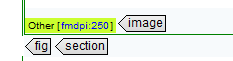

Assigning a DPI value to an image
- Select an image.
-
Go to the Attributes view.
If you do not have this view open, go to Window > Show view > Attributes.
-
Click the
<otherprops>field and enter a value- Type in a value. Use the format fmdpi:xxx.
- Select one of the values you have defined in your subject scheme.
On the bottom of the image, the setting is displayed.